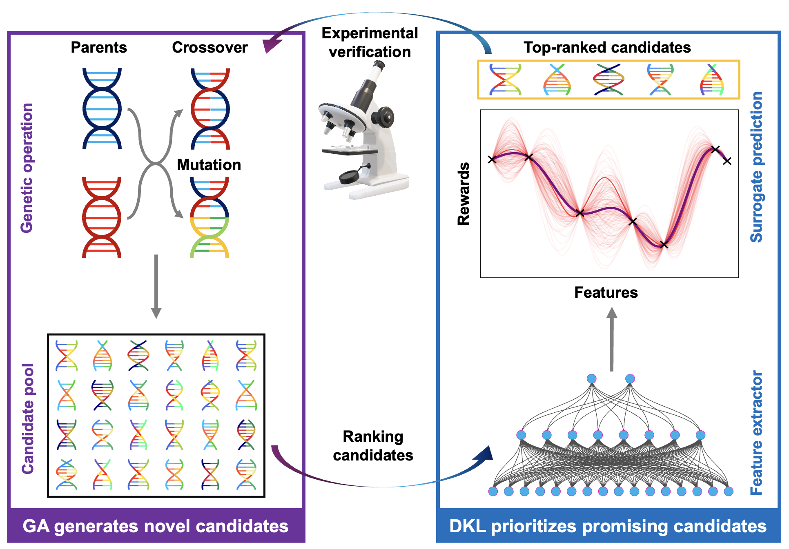

Research
Experiments that learn
from materials.
Our aim is to connect atomic-scale control with adaptive characterization and model-guided experimental decisions. These research directions define the lab’s planned program at Northeastern.
Automated atomic fabrication
How can we create a chosen atomic structure and verify its physical response?
We aim to develop scanning probe workflows for atomic manipulation and local modification. The experimental challenge is to recognize the starting structure, choose an intervention, and measure whether the intended change occurred.
Connecting these steps with machine learning could help us explore how local structure determines electronic and other material properties.
AI-automated microscopy and characterization
How should an instrument adapt when the sample or measurement conditions change?
Our approach combines physical knowledge of instrument operation with machine learning. We aim to automate tuning, choose informative locations, and adapt acquisition as new measurements arrive.
Scanning probe microscopy is a starting point. The broader program includes other characterization tools that can contribute complementary measurements of the same material.
Prior work on reward-driven microscope tuningClosed-loop quantum materials discovery
Which experiment should come next?
We aim to connect fabrication and characterization through models that learn from experimental results. A model can propose a new composition, structure, or measurement, then update its predictions using the outcome.
Our goal is to accelerate the search for useful material behavior while retaining the measurements and uncertainty needed to test physical explanations.
Experimental search
Generating and testing
new candidates.
A search algorithm can propose candidates while a learned model prioritizes which ones to evaluate experimentally.


Method schematic supplied by Richard Liu. Figure source.
The experimental objective determines what the model learns to prioritize. Physical interpretation requires checking the measured response and the assumptions behind that objective.
Build the tools with us.
Our research needs experimentalists, instrument builders, and researchers who connect machine learning with physical measurements.
Explore opportunities